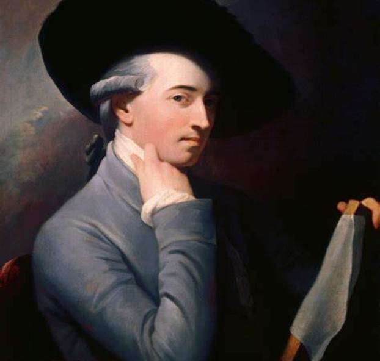
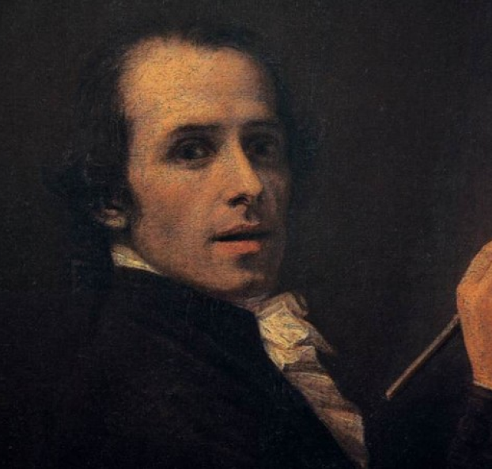
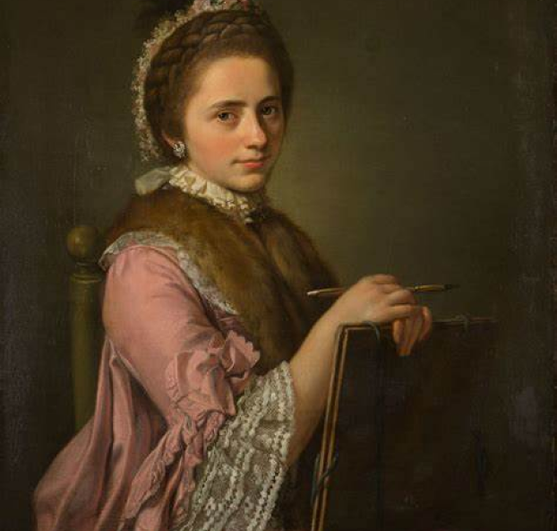
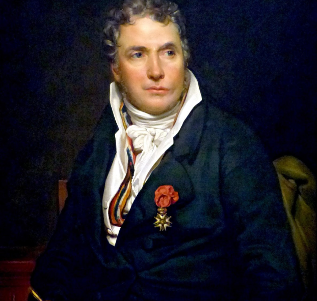

Jean grew up around artists, this may have been a deciding factor for his interest in arts. He was also a skilled sculptor that eventually gained apprenticeship to the sculptor Michel Ange Slodtz.
He also opened a foundry in which he would create artworks. These were marked with personalized red wax seals for the sake of authenticity.
Angelica was seen as a “Child Prodigy” in the field of painting, it has also been mentioned she was skilled in music. But it seems she preferred the path of an artist.
Like most young aristocrats, Angelica went on the “Grand Tour” along with her father in order to build her artistic skills and develop a deeper understanding in this subject.
“The Death of General Wolfe, oil painting created in 1770 by artist Benjamin West, depicting the death of British Major General James Wolfe during the 1759 Battle of Quebec. The monumental Neoclassical painting is one of the artist’s best known works as well as one of the most famous paintings of the 18th century.”
(Davies n.d)
Cole (2022), How Neoclassical Art Rejected Rococo by Reviving Classical Ideas in the 18th Century, My Modern Met, retrieved from https://mymodernmet.com/what-is-neoclassicism/
Davies (n.d), The Death of General Wolfe, Britannica, retrieved from https://www.britannica.com topic/The-Death-of-General-Wolfe
Gurney (2023), The Oath of Horatii, The history of art.org, retrieved from https: www.thehistoryofart.org/jacques-louis-david/oath-of-horatii
Gurney (2020), PSYCHE REVIVED BY CUPID'S KISS, The history of art.org, retrieved from https: www.thehistoryofart.org/antonio-canova/psyche-revived-by-cupids-kiss/
Irwin (2023), Neoclassical art, Britannica, retrieved from https://www.britannica.com/art Neoclassicism#ref335853
Martin (n.d), Angelica Kauffmann, Cornelia Pointing to her Children as Her Treasures, SmartHistory, retrieved from https://smarthistory.org/angelica-kauffmann-cornelia-pointing-to her-children-as-her-treasures/
Mccoy (2020), Oath of the Horatii, Khan Academy, retrieved from https://www.khanacademy.org humzanities/ap-art-history/later-europe-and-americas/enlightenment-revolution/a/david-oath of-the-horatii
Motta (n.d), What is Neoclassicism?, Useum.org, retrieved from https://useum.org/exhibition curated/Neoclassicism/What-is-Neoclassicism
The Art Story (n.d), Neoclassicism, The Art Story , retrieved from https://www.theartstory.org movement/neoclassicism/#Neoclassicism:%20Concepts,%20Styles,%20and%20Trends
Wiencke (n.d), Johann Winckelmann, Britannica, retrieved from https://www.britannica.com biography/Johann-Joachim-Winckelmann
The Movement was also encouraged by Johann Winckelmann, a German archaeologist and art historian whose writings revived interest in classical art among the general public and had a key role in inspiring the Neoclassical movement in the arts.
For example, He wrote a book named which was named “Reflections on the Painting and Sculptures of the Greeks” containing the Greek ideal in education and arts.
Another one was named “History of the Art of Antiquity” which contained descriptions of ancient arts. Including ones such as the classical era.
Both texts are a few examples of how Johann’s writings were able to increase the Neoclassic art movement’s popularity. And inspire others to go along with it. (Wiencke n.d)
The painting represents the three Horatii brothers taking an oath before partaking in a duel against the Curatii brothers. This duel was arranged between Rome and Alba, in order to settle a dispute without going to war. (Mccoy 2016)
In the painting the women are weeping, this is because they cannot stop the duel from occurring. What’s tragic about this is that one is married to a Horatii and another is betrothed to a Curatii that is both participating the battle.
(Gurney 2022)
1784 Oath of the Horatii - Jacques-Louis David    
The Neoclassic Period